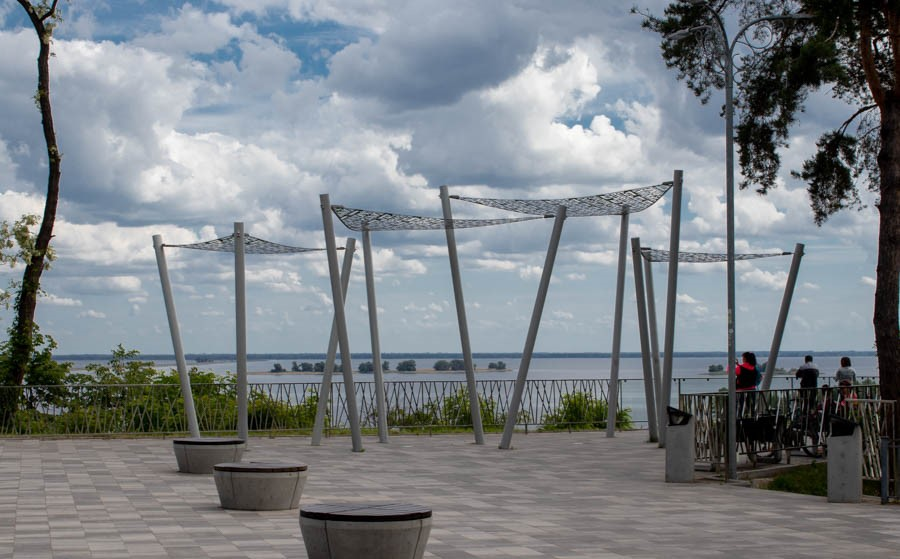
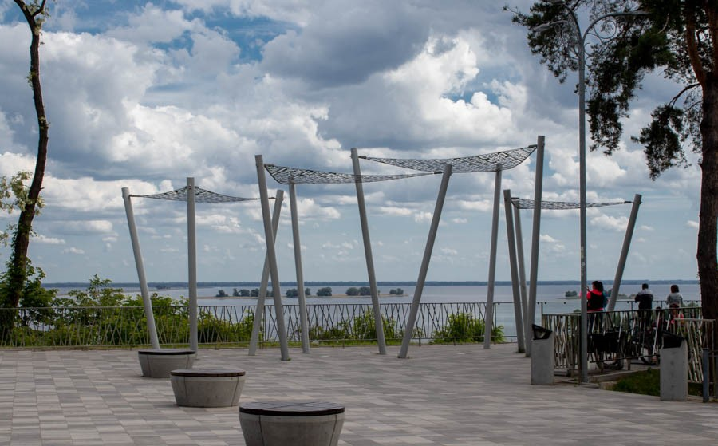

Зоопарк


Черкаський міський зоопарк — це чудове місце для сімейного відпочинку. Тут можна побачити більше 200 видів тварин з різних куточків світу, а також насолодитися екскурсією через тематичні комплекси, такі як "Мадагаскар" і "Земля ведмедів і вовків". Зоопарк активно займається науковими дослідженнями та забезпечує комфортні умови для відвідувачів та тварин. Для дітей є спеціальні зони відпочинку, а для дорослих — кафе та зручні місця для відпочинку
Більше деталей на сайті зоопаркуБуддистський храм "Білий лотос"


Храм Білого Лотоса - найбільший буддійський храм в Європі. Єдиний в Україні буддистський храм, який включає також школу бойових мистецтв. Тут усі охочі можуть вивчати тайський бокс, основи самооборони, кунг-фу техніки лаоської школи Ша-Фут-Фань, йогу, східні танці, практику правильного дихання, основи зцілення і опановувати таємниці чайної церемонії.
Парк "Сосновий Бір"

 

Парк Сосновий бір у Черкасах — це чудове місце для відпочинку, яке підходить для всієї родини. Тут можна насолоджуватися прогулянками по затишних алеях серед хвойних дерев або відпочити на лавочках з видом на Дніпро. Парк пропонує різноманітні атракціони, серед яких колесо огляду та дитячі майданчики, що зробить відпочинок цікавим і для малечі. Також є фудкорти, де можна перекусити. Це ідеальне місце для активного та спокійного відпочинку в будь-яку пору року
«Склад №5» арт-галерея


Арт-галерея "Склад №5" у Черкасах є одним з основних центрів сучасного мистецтва в місті. Галерея активно підтримує українських художників і організовує виставки, які охоплюють різні художні напрямки, від графіки до інсталяцій і перформансів. Вона часто проводить благодійні заходи та аукціони, а також залучає митців до важливих соціальних і культурних ініціатив, таких як виставки на підтримку ЗСУ. Простір виступає важливим майданчиком для вільного висловлювання та обміну ідеями серед митців і глядачів


Ангкор-Ват


Тропічний парк-терраріум "Ангкор-Ват" у Черкасах — це унікальний комплекс, який нагадує знаменитий храмовий комплекс в Камбоджі. Він відкриває відвідувачам можливість поринути в атмосферу тропіків, де на території розміщені різноманітні рослини та тварини. Парк також став популярним місцем для родинного відпочинку, завдяки своїм інсталяціям, атракціонам і можливості насолодитися природою